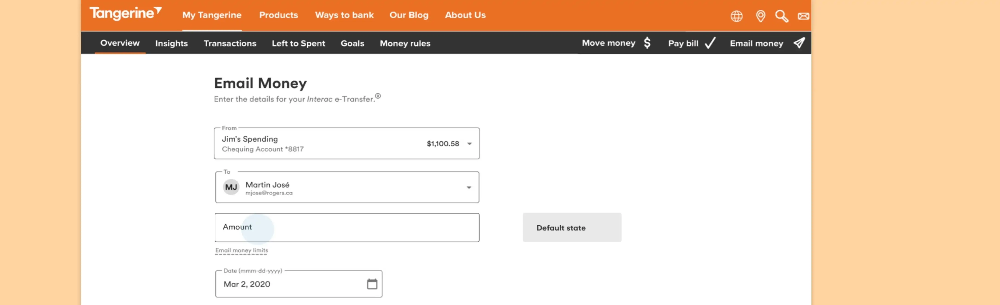
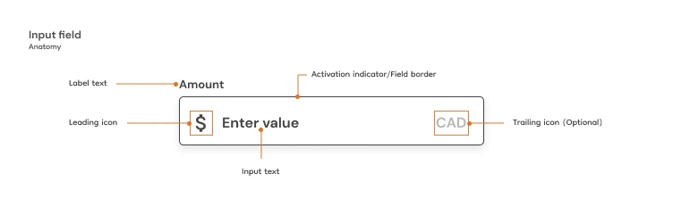
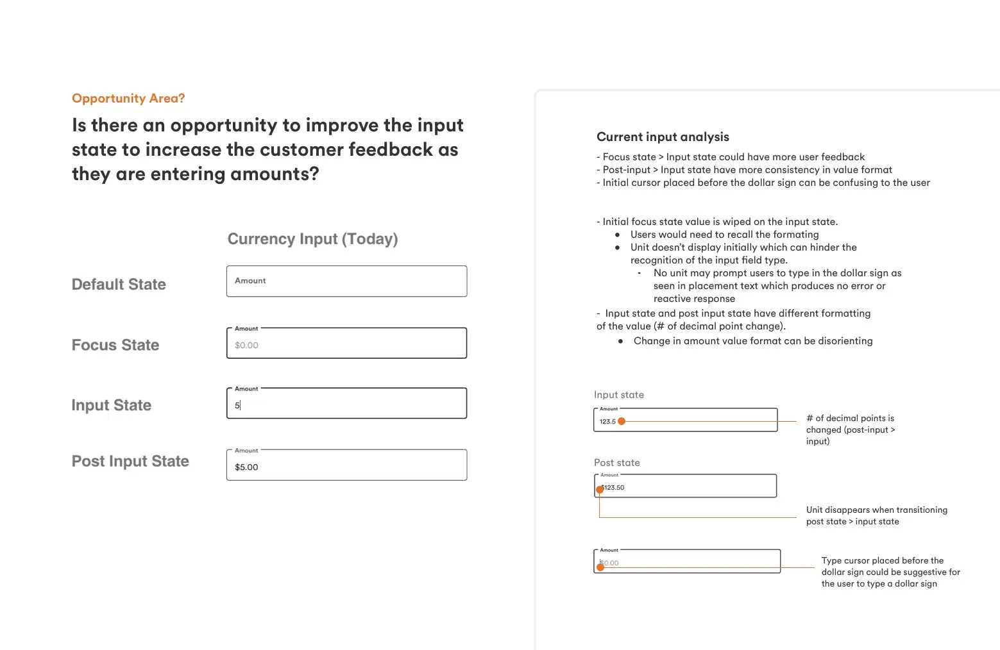
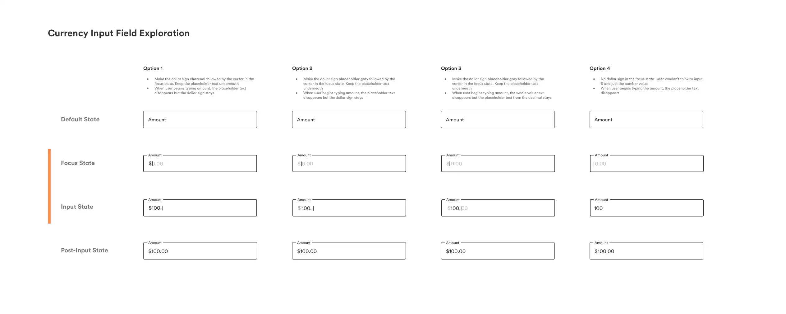
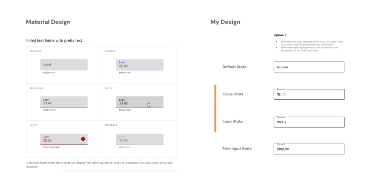

Amount Input Field Exploration
Tangerine
Role
UX Associate
Duration
July - August 2021
Tools
Sketch, Invision
Project type
Interaction Design
Brief
Input fields are a common interaction that users go through when filling out a form. Especially in banking, filling out the amount input field is something that banking clients have to interact with whenever they need to pay a bill, send or transfer money. Tangerine was looking at opportunities to improve the user feedback in this interaction, specifically the amount input field. 
My Role
This was one of the design explorations that I had conducted during my internship at Tangerine. Throughout this project, I worked both independently and collaboratively with the design team to come up with a proposed solution to present to the VP of Digital + Innovation and to propose as a global component change.
The Problem
Current Input Field Analysis
Beginning this exploration, I first started by analysing the current amount input fields and identified which states have potential to be improved on.
I outlined the micro-interactions and flow that takes place between the different states. Breaking down the interaction, I was able to focus on certain states that I thought needed improving in the current design.

In my own UX audit of the current state of the amount field input, I wrote down notes regarding incosistensies in the formatting as well as possible solutions to improve these inconsistencies.
Design Iterations
Following my analysis of the current design of the input fields, I then experimented with different ideas that may contribute to better usability for the amount field. I not the changes I made from the current design and outlined the benefits and drawbacks of each option. 
After independently experimenting with different design options, I then presented these design options in the team's design review to gather feedback from other designers. The main feedback I got from the review was to look over the current angular and material design solution for input fields and leverage that in the final solution.
Referencing Material Design
Looking over the Material Design system was super helpful in coming up with the coming up with a final design solution. In comparing my design with Material, I found that that it aligned closely with the first option I created. 
Proposed Change
In the second review session, I presented a final solution that combined my design with the material design solution and ensured that that it matched with Tangerine's design system.

Use Cases
I continued to futher explore the amount input field design by picturing the different use cases with the proposed solution. These use cases included:
- Entering an amount without decimals
- Entering an amount with decimals
- Entering an large value in the thousands (with commas)
- Entering an amount when there is a currency change
- Error states

Demo / Prototype
To picture it in a more realistic scenario, I also prototyped the proposed input field design into a user flow that contained an amount input field. This was to provide more contextual visualization of how the solution would be implemented within Tangerine's current forms that include an amount field.
Takeaways
This project gave me the opportunity to make an impact on Tangerine's design system and explore potential opportunity for improvement in usability of input fields. It is my first project where I was able to focus on interaction design and look at the micro-interactions of an input field component.
Thanks to the support of the design team at Tangerine, I was able to gain a better understanding of the steps needed to fully flush out an exploration which includes: research, analysis, examining use cases, getting feedback and iterating on designs.
Although it is a small change, I think that my solution will help to improve the consistency and usability when clients enter in an amount value. I am also grateful for the opportunity to be able to present my exploration findings and proposal to the VP of Digital + Innovation.